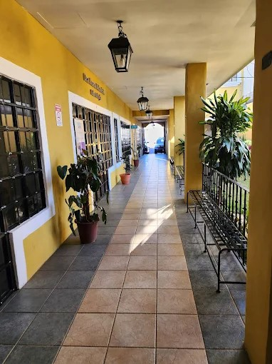
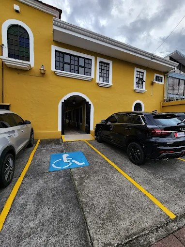
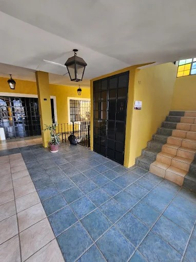

Sanar, comprender y florecer en cada etapa de la vida.
Acompañamiento psicológico clínico y psicopedagógico integral para niños, jóvenes, adultos y familias. Un espacio cálido, seguro y confidencial guiado por más de 25 años de vocación y ciencia.
+25 AñosTrayectoria ProfesionalINS Salud, PANI y consulta privada
3 EtapasAtención EspecializadaNiñez, juventud y adultez integral
2 MaestríasEnfoque Dual IntegradoPsicología Clínica y Psicopedagogía
Ley 7600Accesibilidad TotalParqueo propio y rampa universal
Propósito de CR Terapia
El poder de la conexión humana para sanar y florecer
Cada proceso terapéutico es un camino compartido. Creemos en brindar una atención personalizada, empática y basada en la evidencia científica para potenciar tu autonomía y calidad de vida.
“Acompañar a personas de todas las edades en su proceso de crecimiento personal, emocional y cognitivo, integrando herramientas de la psicología clínica y la psicopedagogía para potenciar su bienestar, autonomía y calidad de vida.”
— MPSc. Adriana Trigueros Elizondo · Fundadora de CR Terapia
Espacio Seguro y Cálido
Un entorno libre de juicios donde expresar tus emociones con confianza. La contención empática es el primer cimiento para la transformación real.
Ciencia & Evidencia
Abordajes cognitivo-conductuales, terapia Gestalt y aportes de la neurociencia aplicados al aprendizaje, autorregulación y resolución de conflictos.
Mirada Integral 360°
Consideramos todo tu contexto: emocional, familiar, educativo y laboral. No tratamos solo síntomas aislados, sino a la persona en su totalidad.
Pausa de Calma
Regálate un momento de serenidad ahora mismo
Si estás experimentando tensión o ansiedad en este instante, realiza 3 respiraciones conscientes con nuestra técnica guiada 4-7-8 recomendada para calmar el sistema nervioso:
1Inhala suavemente por la nariz durante 4 segundos.
2Sostén el aire con calma durante 7 segundos.
3Exhala despacio por la boca durante 8 segundos.
Respira con calma4-7-8
Nuestros Servicios
Acompañamiento especializado para cada momento vital
Selecciona la categoría de tu interés para conocer los enfoques terapéuticos y valoraciones disponibles en CR Terapia.
Adultos
Terapia Individual para Adultos
Espacio clínico para el tratamiento de la ansiedad, depresión, duelo, estrés laboral, manejo de límites, dependencia emocional y fortalecimiento de la autoestima.
Gestión de crisis y ansiedad generalizada
Procesamiento de duelos y rupturas
Salud ocupacional y balance de vida
Niñez & Adolescencia
Psicoterapia Infantil & Juvenil
Abordaje lúdico y terapéutico adaptado a cada etapa del desarrollo: regulación emocional, problemas de conducta, baja tolerancia a la frustración, miedos y cambios familiares.
Terapia mediante el juego y expresión emocional
Prevención de autolesiones y apoyo al adolescente
Desarrollo de habilidades sociales y empatía
Psicopedagogía
Evaluaciones & Diagnósticos Psicopedagógicos
Detección temprana y diagnóstico de dificultades en lectoescritura, cálculo, atención y funciones ejecutivas. Redacción de informes clínicos y educativos formales para centros escolares.
Pruebas estandarizadas y diagnósticos precisos
Recomendación de adecuaciones curriculares
Planes de intervención y estimulación remedial
Neurodiversidad
Especialización en TEA, TDAH y NEE
Estrategias conductuales y cognitivas para personas dentro del Espectro Autista y con Déficit Atencional con o sin Hiperactividad. Orientación en el entorno natural y escolar.
Manejo conductual positivo en aula y hogar
Fortalecimiento de la función ejecutiva
Capacitación personalizada a padres y madres TEA
Familia
Acompañamiento Familiar & Crianza Consciente
Asesoría para madres, padres y cuidadores en el establecimiento de límites saludables sin violencia, comunicación asertiva, resolución de conflictos y procesos de divorcio o duelo familiar.
Pautas claras de crianza positiva y límites firmes
Mediación de conflictos intergeneracionales
Articulación coordinada con el centro educativo
Certificación Oficial
Certificación de Idoneidad Mental (Armas)
Evaluación psicológica integral y emisión del dictamen oficial de idoneidad mental requerido para la portación y tenencia de armas, debidamente avalado ante el Colegio de Profesionales en Psicología de Costa Rica (C.P.P.C.R.).
Aplicación rigurosa de protocolos vigentes C.P.P.C.R.
Entrevista clínica y pruebas psicométricas validadas
Entrega ágil y confidencial del dictamen digital

Capacitaciones
Talleres, Charlas & Asesorías Institucionales
Conferencias y seminarios interactivos dirigidos a docentes, escuelas de padres, empresas e instituciones sobre salud mental, clima organizacional, neurodiversidad e inclusión.
Charlas dinámicas para docentes sobre manejo de aula
Talleres de salud mental y prevención de burnout
Diseño de contenidos a la medida de la institución
Instalaciones en Heredia
Un espacio seguro, accesible y privado para tu tranquilidad
Ubicado en Mercedes Norte de Heredia, nuestro consultorio cuenta con estacionamiento propio, rampa de acceso universal bajo la Ley 7600 y un ambiente acogedor para que te sientas como en casa.

Fachada Acogedora & Estacionamiento Propio
Entrada independiente en una zona tranquila de Heredia con fácil conexión desde San José, Alajuela y Heredia centro.

Parqueo Reservado & Acceso Ley 7600
Ambiente Colonial Cálido y Discreto
Parqueo Exclusivo
Seguridad y comodidad justo al llegar
Acceso Universal
Rampa y adaptaciones según Ley 7600
Privacidad Total
Consultorio con aislamiento acústico
Ubicación Céntrica
Mercedes Norte, Heredia, Costa Rica
MPSc. Adriana Trigueros Elizondo
Psicóloga Clínica · Psicopedagoga
Miembro Activo del Colegio de Profesionales en Psicología de Costa Rica (C.P.P.C.R.)
Más de 25 años construyendo puentes hacia el bienestar
"A lo largo de mi carrera profesional he tenido el honor de acompañar a cientos de personas de todas las edades en la superación de sus dolores, el descubrimiento de su potencial y la reconstrucción de sus vínculos familiares."
Mi experiencia combina la práctica clínica individual en consulta privada con una sólida trayectoria institucional en el Instituto Nacional de Seguros (INS Salud) —donde formé parte de la Unidad de Rehabilitación, Clínicas de Amputados, Lesionados Medulares y Manejo del Dolor—, así como intervenciones y planes de apoyo psicosocial en el Patronato Nacional de la Infancia (PANI) y el Hogar Bíblico Roblealto.
Maestría Profesional en Psicología Clínica y de la Salud Mental
Universidad Fidélitas
Maestría Profesional en Psicopedagogía
Universidad Autónoma de Centro América (UACA)
Licenciatura en Psicología
Universidad Autónoma de Centro América (UACA)
Especializaciones Complementarias Continuas
Prevención del Riesgo Suicida, Abordaje en TEA y TDAH, Terapia Gestalt y Certificación de Idoneidad Mental para Armas (C.P.P.C.R.).
Preguntas Frecuentes
Respuestas claras para iniciar tu proceso
Es completamente normal tener dudas antes de tu primera consulta. Aquí respondemos las inquietudes más frecuentes de nuestros pacientes.
Puedes agendar directamente escribiendo al WhatsApp +506 8395-2601 o llamando al teléfono 2262-4675. Atendemos de lunes a viernes de 8:00 a.m. a 6:00 p.m. y sábados en horario especial previa cita.
Sí. Contamos con modalidad presencial en nuestro consultorio en Mercedes Norte de Heredia y también modalidad virtual por videollamada segura para personas que residen fuera de la provincia o prefieren la comodidad de su hogar.
Cada sesión tiene una duración promedio de 50 a 60 minutos. La primera cita es un espacio de escucha donde exploramos tu motivo de consulta, tu historia de vida y acordamos juntos los objetivos del plan terapéutico.
Es una valoración profunda del proceso de aprendizaje, atención, memoria, motricidad y lectoescritura mediante pruebas estandarizadas. Concluye con un informe detallado con recomendaciones claras para la familia y adecuaciones para la escuela o colegio.
Se realiza una entrevista clínica exhaustiva y una batería de pruebas psicométricas y proyectivas conforme a los requisitos del Ministerio de Seguridad Pública y el Colegio de Profesionales en Psicología de Costa Rica. El resultado se reporta de forma oficial en el sistema.
Totalmente. Disponemos de espacio de parqueo privado para nuestros pacientes, rampa de acceso conforme a la Ley 7600 y entrada accesible sin escalones para personas usuarias de silla de ruedas o movilidad reducida.
Demos el primer paso
Inicia tu camino de sanación y bienestar
Escríbenos por WhatsApp o completa el formulario rápido. Responderemos a la brevedad con la disponibilidad y detalles para coordinar tu cita.